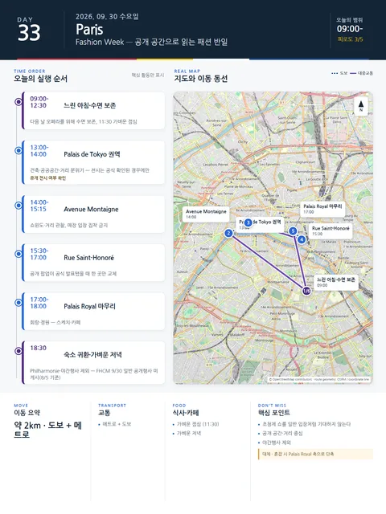

Day 33 · 9/30 수 · Paris

오늘의 주요 장소

- 핵심 실행
- Fashion Week 공개동선 반일
- 권장 출발
- 오전 수면 보존
- 완충
- 야간행사 제외
시간표
| 시간 | 일정 | 실행 포인트 |
|---|---|---|
| 09:00–10:30 | 느린 아침·숙소업무 | 다음 날 오페라를 위해 수면 보존 |
| 11:30–12:30 | 가벼운 점심 | 혼잡한 권역 진입 전 식사 |
| 13:00–14:00 | Palais de Tokyo 권역 | 건축·공공공간·거리 분위기. 전시는 날짜·장소가 공식 확인된 경우에만 |
| 14:00–15:15 | Avenue Montaigne | 쇼윈도·거리 관찰, 매장 입장 집착 금지 |
| 15:30–17:00 | Rue Saint-Honoré | 공개 팝업이 공식 발표됐을 때 한 곳만 교체 |
| 17:00–18:00 | Palais Royal | 회랑·정원에서 마무리, 스케치·카페 |
| 18:30 이후 | 숙소 귀환·가벼운 저녁 | Philharmonie·야간행사 제외 |
피로도
3/5
이 날의 메모
Paris Fashion Week — 공개 공간으로 읽는 패션 반일 고정 경험
8/5 현재 FHCM은 9/30 일반 공개행사를 게시하지 않았다. 초청제 쇼·SPHERE 업계 쇼룸을 일반 입장처럼 표시하지 않는다.
상세 실행 확인
- 최고 리스크
- 초청제 혼동·혼잡
- 우선 삭제
- Rue Saint-Honoré
- 대체안
- Palais Royal 축 단축
- 식사·휴식
- 11:30 가벼운 점심
- 잠금 필요
- 공개행사 재확인
Google 실행지도
Palais de Tokyo 권역과 Saint-Honoré 축
지도 펼치기
지도는 펼칠 때만 불러옵니다.
Daily Action Map

실제 좌표와 OpenStreetMap을 사용한 실행용 요약입니다. 도로·대중교통 상황은 출발 직전에 다시 확인하세요.